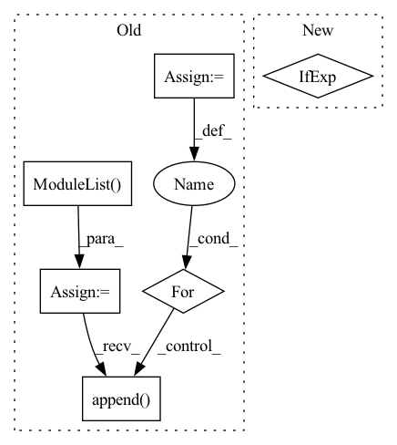

Pattern ID :31753
Before Change
self.mconv = nn.Sequential(*conv)
res_panes = residual_panes.copy()
self.dense_residual = residual
if residual:
res_list = nn.ModuleList()
stride_residual = (
stride if stride[0] == 1 or stride_last else stride[0] ** repeat
)
if len(residual_panes) == 0:
res_panes = [inplanes]
self.dense_residual = False
for ip in res_panes:
res = nn.Sequential(
*self._get_conv_bn_layer(
ip,
planes,
kernel_size=1,
normalization=normalization,
norm_groups=norm_groups,
stride=stride_residual,
bias=False,
)
)
res_list.append( res)
self.res = res_list
else:
self.res = NoneAfter Change
for _ in range(repeat - 1):
// Stride last means only the last convolution in block will have stride
stride_val = [1] if stride_last else stride
conv.extend(
self._get_conv_bn_layer(In pattern: SUPERPATTERN
Frequency: 3
Non-data size: 6
Instances Fragment ID: 92728048
Project Name: scart97/thunder-speech
Commit Name: 29ebb3e96f3f222a4f6744c1bc391725325396f5
Time: 2021-02-05
Author: scart.lucas@gmail.com
File Name: src/thunder/jasper/blocks.py
M Class Name: JasperBlock
N Class Name: JasperBlock
M Method Name: __init__(22)
N Method Name: __init__(23)
M Parent Class: nn.Module
N Parent Class: nn.Module
M File Name: src/thunder/jasper/blocks.py
N File Name: src/thunder/jasper/blocks.py
M Start Line: 329
M End Line: 441
N Start Line: 355
N End Line: 425
Before Change
super(GraphConvGRU, self).__init__()
self.input_size = input_size
self.hidden_size = hidden_size
self.n_layers = n_layers
self.rnn_cells = nn.ModuleList()
for i in range(self.n_layers):
self.rnn_cells.append( GraphConvGRUCell(in_size=self.input_size if i == 0 else self.hidden_size,
out_size=self.hidden_size,
root_weight=root_weight))
After Change
self.input_size = input_size
self.hidden_size = hidden_size
rnn_cells = [
GraphConvGRUCell(input_size if i == 0 else hidden_size, hidden_size,
asymmetric_norm=asymmetric_norm,
root_weight=root_weight, activation=activation,
bias=bias, cached=cached, Fragment ID: 92728049
Project Name: torchspatiotemporal/tsl
Commit Name: acade09a6f966fa0546f78fdd97f0a4ca291ec76
Time: 2022-12-13
Author: ivan.marisca@hotmail.it
File Name: tsl/nn/blocks/encoders/gcgru.py
M Class Name: GraphConvGRU
N Class Name: GraphConvGRU
M Method Name: __init__(11)
N Method Name: __init__(5)
M Parent Class: RNNBase
N Parent Class: _GraphRNN
M File Name: tsl/nn/blocks/encoders/gcgru.py
N File Name: tsl/nn/blocks/encoders/gcgru.py
M Start Line: 39
M End Line: 52
N Start Line: 62
N End Line: 82
Before Change
super(GraphConvLSTM, self).__init__()
self.input_size = input_size
self.hidden_size = hidden_size
self.n_layers = n_layers
self.rnn_cells = nn.ModuleList()
for i in range(self.n_layers):
self.rnn_cells.append( GraphConvLSTMCell(in_size=self.input_size if i == 0 else self.hidden_size,
out_size=self.hidden_size,
root_weight=root_weight)) After Change
self.input_size = input_size
self.hidden_size = hidden_size
rnn_cells = [
GraphConvLSTMCell(input_size if i == 0 else hidden_size,
hidden_size, asymmetric_norm=asymmetric_norm,
root_weight=root_weight, activation=activation,
bias=bias, cached=cached, Fragment ID: 92728045
Project Name: torchspatiotemporal/tsl
Commit Name: acade09a6f966fa0546f78fdd97f0a4ca291ec76
Time: 2022-12-13
Author: ivan.marisca@hotmail.it
File Name: tsl/nn/blocks/encoders/gclstm.py
M Class Name: GraphConvLSTM
N Class Name: GraphConvLSTM
M Method Name: __init__(11)
N Method Name: __init__(5)
M Parent Class: RNNBase
N Parent Class: _GraphRNN
M File Name: tsl/nn/blocks/encoders/gclstm.py
N File Name: tsl/nn/blocks/encoders/gclstm.py
M Start Line: 41
M End Line: 54
N Start Line: 69
N End Line: 89